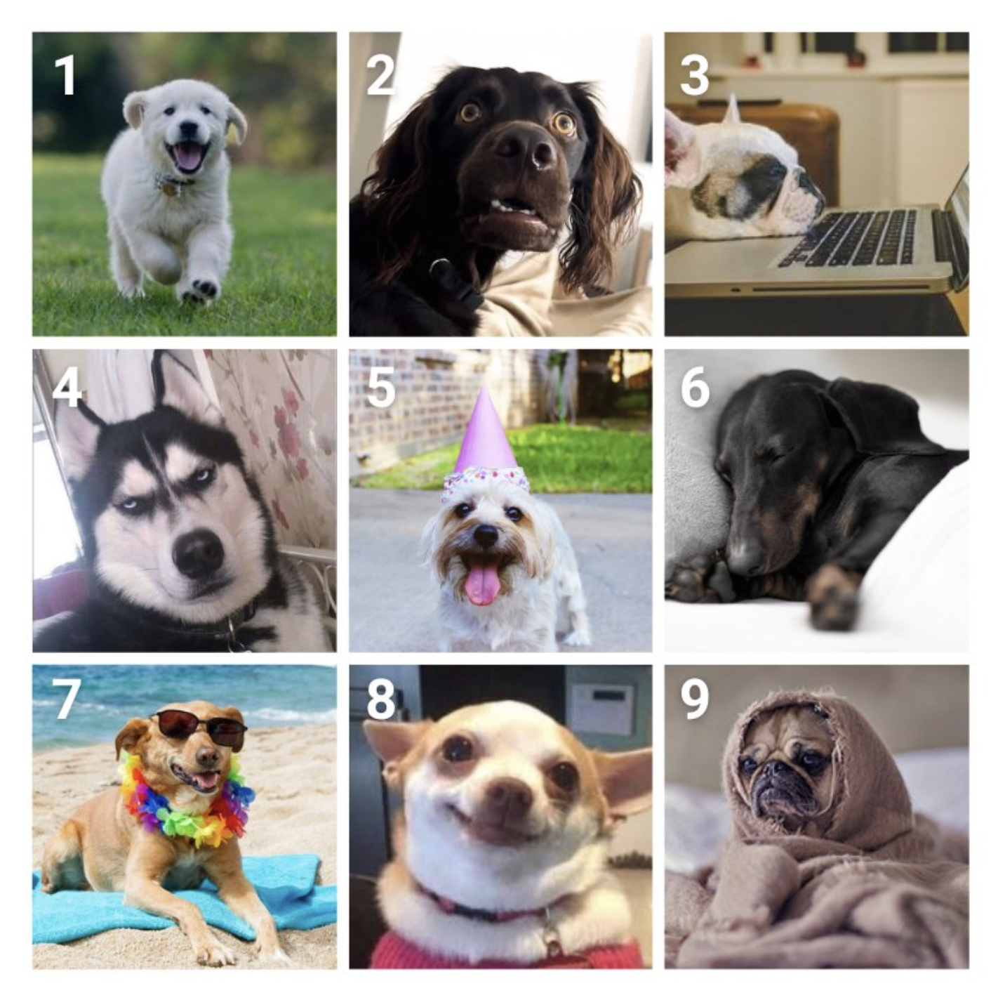
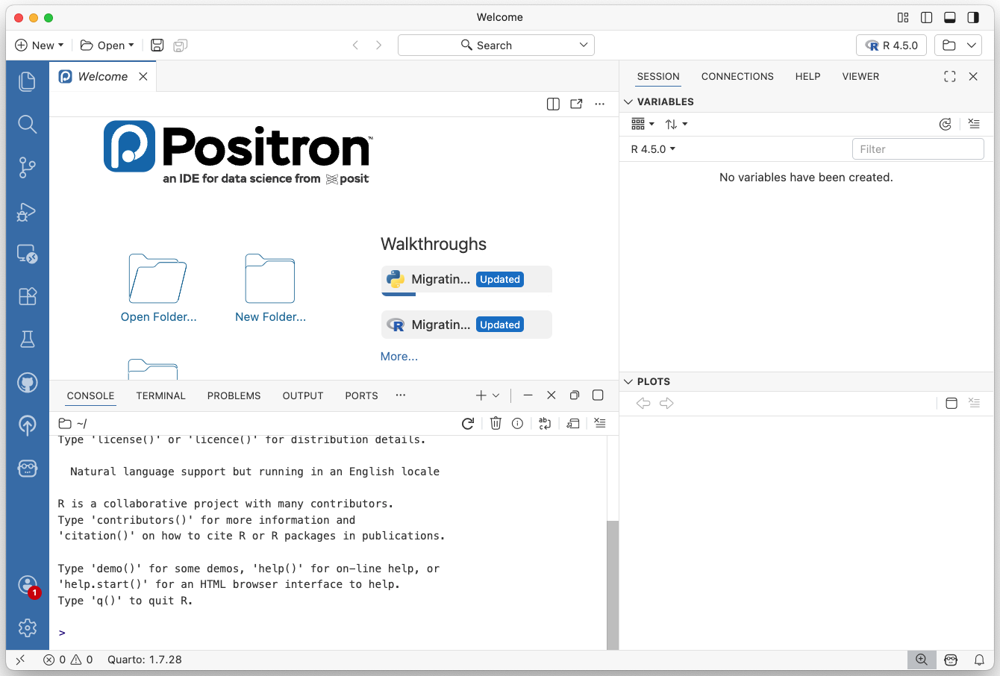
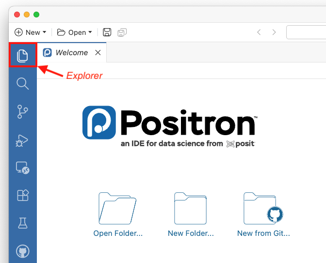
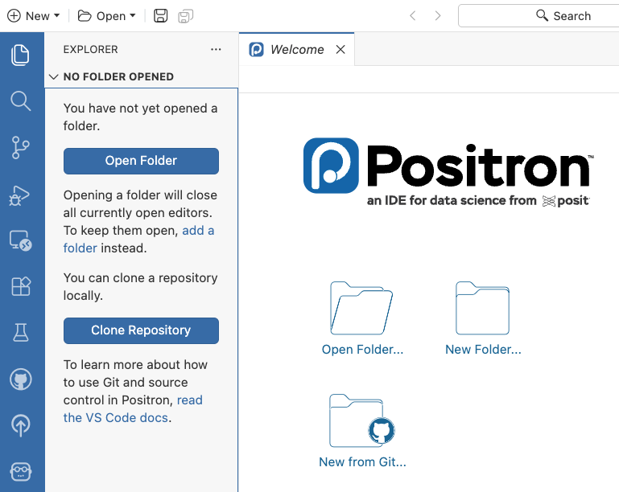

05:00
Lab 1
Welcome
Introductions
Meet your GSI
Introduce yourself to the clasas. You can talk about your:
- Name
- Major
- Experience
- Fun fact
With the people around you …
. . .
Take a few minutes to share your:
- Name
- Major
- Year
- Hometown
- Which dog mood are you today?

Ice Breakers
About the Course
Course Website
https://stat133.berkeley.edu/spring-2026
Syllabus
Please take some minutes to read the syllabus and jot down at least two questions that you have.
https://stat133.berkeley.edu/spring-2026/syllabus.html
05:00
Software
Installation
03:00
1) R
https://www.r-project.org/
. . .
2) Positron
https://positron.posit.co/
. . .
⚠️ 2b) If Positron fails, then RStudio
https://posit.co/download/rstudio-desktop/
. . .
3) Windows users‼️: Git
https://git-scm.com/
Folder stat133
Directory stat133
In your computer, e.g. folder Desktop or Documents, please create a folder (i.e. directory) for this course.
👍 Good Names:
stat133STAT133Stat133
👎 Bad Names (no blank spaces):
stat 133STAT 133Stat 133
This will be a dedicated directory for all the work you’ll do in this course.
IDE: Positron (or RStudio)

First contact with Positron (or Rstudio)
Demo:
Open Positron
Understanding workspace
Quadrants or panes
Explorer (Positron)
Let’s focus on the Explorer tab

Explorer (Positron)
Open your folder stat133

Explorer tab
Let’s focus on the Explorer tab
Use it to find your folder
stat133Click on
stat133(i.e. move inside this folder)Click on folder icon to create a
labsfolderClick on
labs(i.e. move inside this folder)Inside
labs, create a folderlab1
First contact with Quarto File
Open a Quarto file (i.e. Quarto document)
Understanding anatomy of basic quarto file
- YAML header
- Narrative elements
- Code chunks
Edit YAML header:
title: "Lab 1"author: "First Last"
Rendering a .qmd file
Click the Preview button. In RStudio is the Render button.
Save file in your
lab1folder.Output file is an HTML document (assuming
format: html)BTW: most assignments will require submission of their
.qmdand.htmlfiles.
Editing a .qmd file
Edit the content of your .qmd file to include the following content:
- Major(s) and, if applicable, minor.
- Hometown.
- Favorite song in the last 3 months.
- Insert a table (e.g. 3x3 table).
- Insert an image.
- Include a quote.
. . .
Render your quarto file again.
Submission to bCourses
Submit both your .qmd and .html files to bCourses under the lab1 assignment.
This is a “dummy” assignment: won’t be part of your grade; we just want to make sure everyone knows how and where to submit .qmd and .html files.
So far …
Software Installed
Directory, subdirectories, and files:
stat133/
labs/
lab1/
lab1-first-last.qmd
lab1-first-last.html- Lab1
.qmdand.htmlfiles submitted to bCourses
Terminology
File
A named container that stores data—such as text, images, or programs—on a computer disk.
The file name usually ends in an extension (.txt, .png, .qmd) that indicates the format.
Directory (or Folder)
A named container that stores a set of files or other folders.
We’ll write directories by appending a slash at the end: e.g., Documents/, stat133/, lab1/
In case of trouble
If you experienced any issues today, for example:
- installing software
- rendering
.qmdfile - submission to bCourses
- got lost along the discussion
then please come to office hours!